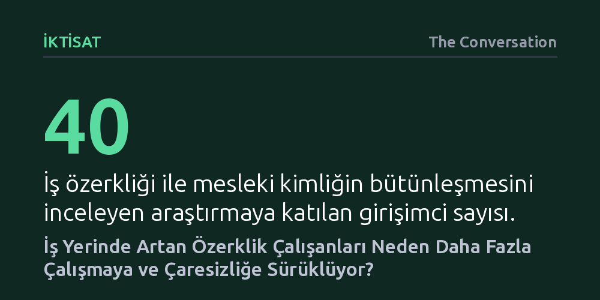

IKTISAT · The Conversation · 2026-09-09
İş yerinde sağlanan özerklik ve esneklik, çalışanların zihnen işten kopmasını zorlaştırarak daha uzun ve ücretsiz çalışmalarına yol açıyor. Kendi işini yönetme sorumluluğu mesai sınırlarını silikleştirirken, kişiyi tükenmişliğe ve çaresizlik hissine sürüklüyor.
Esnek çalışma ve mesai özerkliğinin her zaman çalışanın lehine olmadığını, aksine iş yönetimini bireye yıkarak zihinsel bir esarete ve karşılıksız emeğe dönüşebileceğini gösteriyor.

Akşam yemeğinde ailenizle otururken kafanızda ertesi günün toplantısını planladığınızı ya da televizyon izlerken göz ucuyla iş e-postalarını denetlediğinizi fark etmişsinizdir. Bu davranış çoğu zaman bilinçli bir tercih veya acil bir krizden kaynaklanmaz; çalışma hayatında kazanılan özerkliğin, yani ne zaman ve nasıl çalışacağını seçebilme serbestisinin çalışanlara ödettiği gizli bir bedeldir.
Yıllardır yönetim ve çalışma psikolojisi literatürü profesyonel özerkliği tartışmasız bir kazanım olarak sundu. Nerede, ne zaman ve hangi yöntemle çalışacağına karar verme yetkisinin çalışan motivasyonunu artırdığı, iş tatminini yükselttiği ve genel sağlığı desteklediği savunuldu. Ancak güncel bulgular madalyonun diğer yüzünü ortaya koyuyor: Daha fazla özerklik çoğu zaman daha fazla işe ve zihinsel olarak hiçbir zaman dinlenememeye dönüşüyor.
Özerkliği yüksek çalışanların karşılaştığı en temel zorluk, mesai bittiğinde işi arkalarında bırakamamalarıdır. Bir çalışan kendi görevleri üzerinde ne kadar çok karar yetkisine sahipse, o işle ilgili tamamlanmamış kararları ve çözülmemiş problemleri mesai sonrasına taşıma olasılığı o kadar artar. Psikoloji literatüründe 'psikolojik kopuş' olarak adlandırılan, yani kişisel zamanda işle ilgili düşüncelerden bütünüyle uzaklaşabilme becerisi devreye giremediğinde, zihinsel ve duygusal toparlanma gerçekleşemez. Kişi dinlenemeden tükettiği pillerle ertesi güne başlar.
Bu durumun altında yatan temel mekanizma, özerkliğin getirdiği sahiplik duygusudur. Yalnızca kendisine verilen talimatları uygulayan biri mesai bitince işi kolayca bırakabilirken, sürecin kontrolünü elinde tutan kişi tüm sorumluluğu sırtında taşır. Kırk girişimciyle yürütülen bir araştırma, iş ile kimliğin birbirine karıştığı durumlarda bu kopuşun imkânsızlaştığını gösteriyor. Kendi işini yöneten kişiler, iş hayatları ile kişisel yaşamlarını ayırmayı bir tür suçluluk olarak görmekte ve mesuliyeti doğrudan benlikleriyle özdeşleştirmektedir.
Araştırmalar, görevleri ve takvimleri üzerinde geniş yetkisi olan çalışanların aslında daha az değil, daha çok çalıştığını doğruluyor. Çalışanlar kendilerine gösterilen güvene ve tanınan esnekliğe fazladan emek harcayarak karşılık verme eğiliminde oluyor. Bu dinamik özellikle uzaktan veya evden çalışma modellerinde belirginleşiyor.
Fiziksel ofiste bulunmamak, yani görünürlüğün azalması, çalışanlarda 'çalıştığını kanıtlama' kaygısını tetikliyor. Kişi bağlılığını göstermek için geç saatlerde gelen iletilere anında yanıt veriyor, bilgisayar başında sürekli çevrimiçi kalıyor ya da fazladan projeler üstleniyor. Fiziksel bir iş yerinden ayrılmanın getirdiği doğal mesai sonu çizgisi yok olduğunda, yerini sürekli erişilebilir olma beklentisi alıyor. Erişilemez olmak ise artık özel bir gerekçe ve savunma gerektiriyor.
Birçok ülkede gündeme gelen 'bağlantıyı kesme hakkı' veya esnek çalışma yasaları, dışarıdan gelen müdahaleleri hedef alıyor; örneğin gece geç saatte yöneticinin gönderdiği e-postayı veya mesai dışı toplantıları kısıtlamaya çalışıyor. Ancak bu düzenlemeler, çalışanın kendi zihnine yerleşmiş olan içsel baskıya çare üretemiyor. Çünkü mesele sadece dışsal bir talep değil, çalışanın işi kendi kimliği ve sorumluluğu haline getirmiş olmasıdır.
Sonuç olarak kurumlar çalışanlara daha fazla özgürlük verirken, aslında o işin yönetim ve takip külfetini de tamamen çalışanın omuzlarına devretmiş oluyor. Özerklik kulağa hala çok cazip ve vazgeçilmez bir ayrıcalık gibi gelse de, çoğu zaman çalışanın güçlenmesiyle değil, gücünü ve kontrolünü kaybetmesiyle sonuçlanıyor. Bu özgürlüğün faturası ise genellikle görünmeyen, takdir edilmeyen ve ücreti ödenmeyen zihinsel bir fazla mesai olarak ödeniyor.